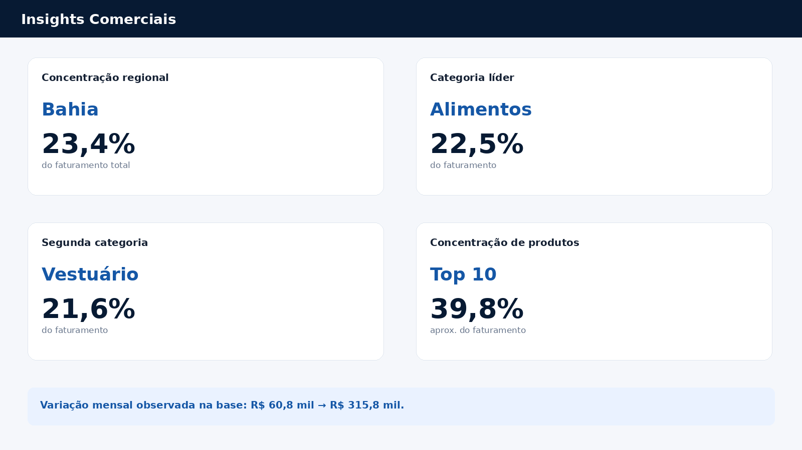

Dashboard
Análise de Vendas e Desempenho
A primeira página permite explorar os dados por Estado, Categoria, Produto e Período. Os indicadores e gráficos são recalculados dinamicamente pelos filtros.

Uma solução analítica desenvolvida para transformar dados de vendas em indicadores, análises interativas e insights de negócio usando Power BI, Excel, Power Query e DAX.
▶ Ver Dashboard InterativoVer dashboardVer insightsA proposta foi estruturar uma base comercial e criar uma solução para acompanhar faturamento, volume de vendas, ticket médio e desempenho por período, estado, categoria e produto.
Consolidar informações comerciais em uma visão única e fácil de explorar.
Disponibilizar indicadores e análises interativas para apoiar a leitura do desempenho.
Dashboard em Power BI com medidas DAX, filtros e uma página dedicada a insights.
Base comercial com 200 registros de vendas e dimensões de cliente, estado, categoria e produto.
Preparação e organização dos dados com Excel e Power Query.
Medidas para faturamento, vendas, quantidade, ticket médio e participação.
A primeira página permite explorar os dados por Estado, Categoria, Produto e Período. Os indicadores e gráficos são recalculados dinamicamente pelos filtros.

Indicadores organizados para responder rapidamente onde está o faturamento e como ele se distribui.
Preparação dos dados e criação de medidas para transformar registros em métricas comparáveis.
Dashboard e insights apresentados de forma visual para facilitar a tomada de decisão.